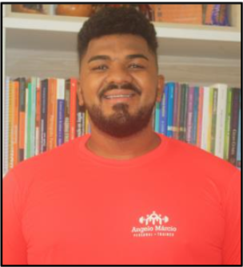
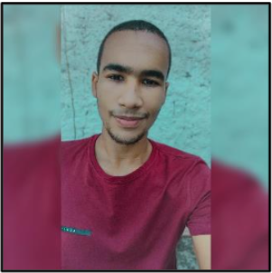
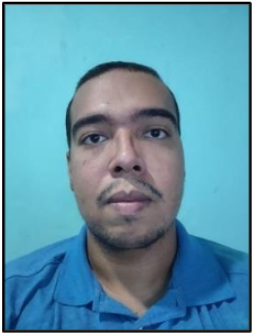
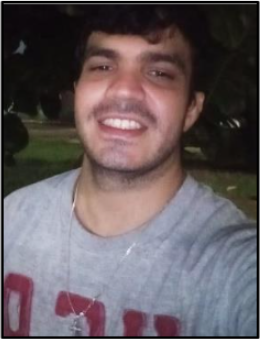
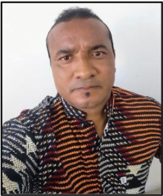
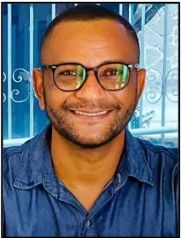

NGEAALC
Butula
O Ngeaalc
Apresentação
Pesquisadores
Estudantes
Técnicos
Colaboradores Internacionais
Estatuto
Regimento
Linhas de Pesquisas
Instituições Parceiras
Egressos
Projetos
Eventos
Revista
Publicações
Artigos
Livros
Teses
Outras Produções
Contato
NGEAALC
NÚCLEO DE
ESTUDOS
AFRICANOS E
AFRO-BRASILEIROS EM
LÍNGUAS
E CULTURAS
Butula
O Ngeaalc
Apresentação
Pesquisadores
Estudantes
Técnicos
Colaboradores Internacionais
Estatuto
Regimento
Linhas de Pesquisas
Instituições Parceiras
Egressos
Projetos
Eventos
Revista
Publicações
Artigos
Livros
Teses
Outras Produções
Contato
Membros - Estudantes

Nome:
Angelo Márcio Correia da Conceição
Link do Lattes:
http://lattes.cnpq.br/7010251249596809
Link do ORCID:
https://orcid.org/0000-0003-0386-5993
Linha de Pesquisa:
3. Patrimônio Cultural, Memória, História e Acervos 4. Educação e Interseccionalidades
Áreas de Interesse:
Letras com ênfase em Português, Inglês, Literatura, atuando principalmente nos seguintes temas: léxico, língua negro-africana.
E-mail:
angelomc35@hotmail.com
Possui graduação em EDUCAÇÃO FISICA (licenciado e bacharel) pela FACULDADE SOCIAL DA BAHIA (2015; 2016). Especialização em Treinamento Físico para a terceira idade. Tem experiência na área de Ciências da Saúde, com ênfase em Educação Física. Atua como Coordenador no Projeto A SAÚDE DAS MULHERES E AS ATIVIDADES FÍSICAS DE 60 +. Pesquisador do Núcleo de Estudos Africanos e Afrobrasileiros em Línguas e Cultura (NGEALC), pertencente à Universidade do Estado da Bahia (UNEB/Campus I, Salvador – Bahia). É Diretor Cultural do Instituto Cidadania e Inclusão Social (IECIS), na cidade de Salvador - Bahia.

Nome:
Arthur Ferreira de Jesus
Link do Lattes:
http://lattes.cnpq.br/3193537285346634
Link do ORCID:
https://orcid.org/0000-0003-0448-2804
Linha de Pesquisa:
2. Línguas da Família Niger-Congo e Negroafricano
Áreas de Interesse:
Educação com ênfase em formação de professores; Tecnologias de Informação e Comunicação Aplicada à Educação; Extensão Universitária e Gestão Pública Universitária.
E-mail:
arthur.uneb@hotmail.com
Graduando em Letras Vernáculas e suas Respectivas Literaturas pela Universidade do Estado da Bahia (UNEB/ DCH I). Pesquisador do Grupo de Pesquisa Núcleo de Estudos Africanos e Afro-brasileiros em Línguas e Culturas (NGEAALC/UNEB).

Nome:
Douglas Henrique Santana Santos
Link do Lattes:
http://lattes.cnpq.br/7895781918246115
Link do ORCID:
https://orcid.org/0000-0002-2464-6231
Linha de Pesquisa:
3. Patrimônio Cultural, Memória, História e Acervos
Áreas de Interesse:
Temáticas relacionadas às Irmandades Negras e Educação; Educação da Relações Étnico-raciais: Diversidade Religiosa e Memórias.
E-mail:
unebletras2019doug@gmail.com
Graduando do curso de Licenciatura em Letras - Língua Portuguesa e Literaturas de Língua Portuguesa, pela Universidade do Estado da Bahia, UNEB, Salvador. Voluntário do “Projeto de Extensão com os dicionários nas mãos: pesquisando palavras dos idiomas português, inglês e espanhol”. Pesquisador do Núcleo de Estudos Africanos e Afro-brasileiros em Línguas e Culturas (NGEAALC/UNEB).
Nome:
Fabiana de Jesus dos Santos
Link do Lattes:
http://lattes.cnpq.br/3849799012474542
Link do ORCID:
https://orcid.org/0000-0001-9313-8225
Linha de Pesquisa:
3. Patrimônio Cultural, Memória, História e Acervos
Áreas de Interesse:
Educação, Patrimônio Cultural e História.
E-mail:
fabianade85@gmail.com
Graduada em Pedagogia, pela Fundação Visconde de Cairu (2017). Especialização em Educação a Distância-EAD, pela Fundação Visconde de Cairu (2020) e Especialização em Spiritualità Francescana, pela Pontificia Università Antonianum - PUA/Itália (2013). Foi bolsista Suore Francescane Immacolatine, SFI, Itália (2014 – 2017). Atualmente é Pós-graduanda em Educação Especial e Inclusiva e Neuropsicopedagogia Institucional e Clínica. Pesquisadora da Universidade do Estado da Bahia, CPDER e do Núcleo de Estudos Africanos e Afro-brasileiros em Línguas e Culturas (NGEAALC/UNEB).

Nome:
Filipe Augusto de Oliveira Costa
Link do Lattes:
http://lattes.cnpq.br/2330822878869358
Link do ORCID:
https://orcid.org/0000-0001-9694-1208
Linha de Pesquisa:
3. Patrimônio Cultural, Memória, História e Acervos
Áreas de Interesse:
Educação com ênfase nos seguintes temas: processo ensino-aprendizagem de leitura e escrita; Educação Profissional e Estudos de Linguagem.
E-mail:
filipeoliveira66@hotmail.com
Graduado em Direito, pela União Metropolitana de Educação e Cultura, (UNIME). Graduando em História, pela Universidade do Estado da Bahia (UNEB). Advogado trabalhista, possui experiência na advocacia trabalhista empresarial. Pesquisador do Núcleo de Estudos Africanos e Afro-brasileiros em Línguas e Culturas (NGEAALC/UNEB).

Nome:
Márcio Costa Vitorino
Link do Lattes:
http://lattes.cnpq.br/2293770677512435
Link do ORCID:
https://orcid.org/0000-0002-4303-9533
Linha de Pesquisa:
1. Culturas Negro-africanas no Brasil
Áreas de Interesse:
Educação; Estudos Sociais e Humanidades; Direitos da população negra e periférica.
E-mail:
mvitorinossa@gmail.com
Mestrando em Intervenção Educativa e Social, pelo Programa Interdisciplinar em Estudos Sociais e Humanidades (MPIES/UNEB). Pedagogo. Educador Social. Sócio fundador do Instituto de Esporte, Cidadania e Inclusão Social. Coordenador da Federação das Associações de Bairros de Salvador (FABS). Conselheiro Distrital de Saúde do Distrito Sanitário Cabula/ Beirú – Salvador – BA. Militante da luta pelos direitos da população negra e periférica. Antimanicomialista. Pesquisador do Núcleo de Estudos Africanos e Afro-brasileiros em Línguas e Culturas (NGEAALC/UNEB).

Nome:
Tairone Acácio Couto
Link do Lattes:
http://lattes.cnpq.br/0207874110321864
Link do ORCID:
https://orcid.org/0000-0003-2022-4346
Linha de Pesquisa:
1. Culturas Negro-africanas no Brasil
Áreas de Interesse:
Letras com ênfase em Português, Inglês, Literatura, atuando principalmente nos seguintes temas: léxico, língua negro-africana
E-mail:
taironeacouto@gmail.com
Graduado do curso de Letras Língua Portuguesa, pela Universidade Paulista (UNIP). Defendi o TCC da graduação em Letras com o título: “Formação de professores de língua portuguesa para o contexto escolar quilombola”. Professor no Reforço Escolar da SEDUC/Sergipe. Sou quilombola do Quilombo Mocambo, localizado em Porto da Folha/Sergipe. Pesquisador do Núcleo de Estudos Africanos e Afro-brasileiros em Línguas e Culturas (NGEAALC/UNEB).
Desenvolvido por
Tatakae
Universidade do Estado da Bahia - © Todos os Direitos Reservados